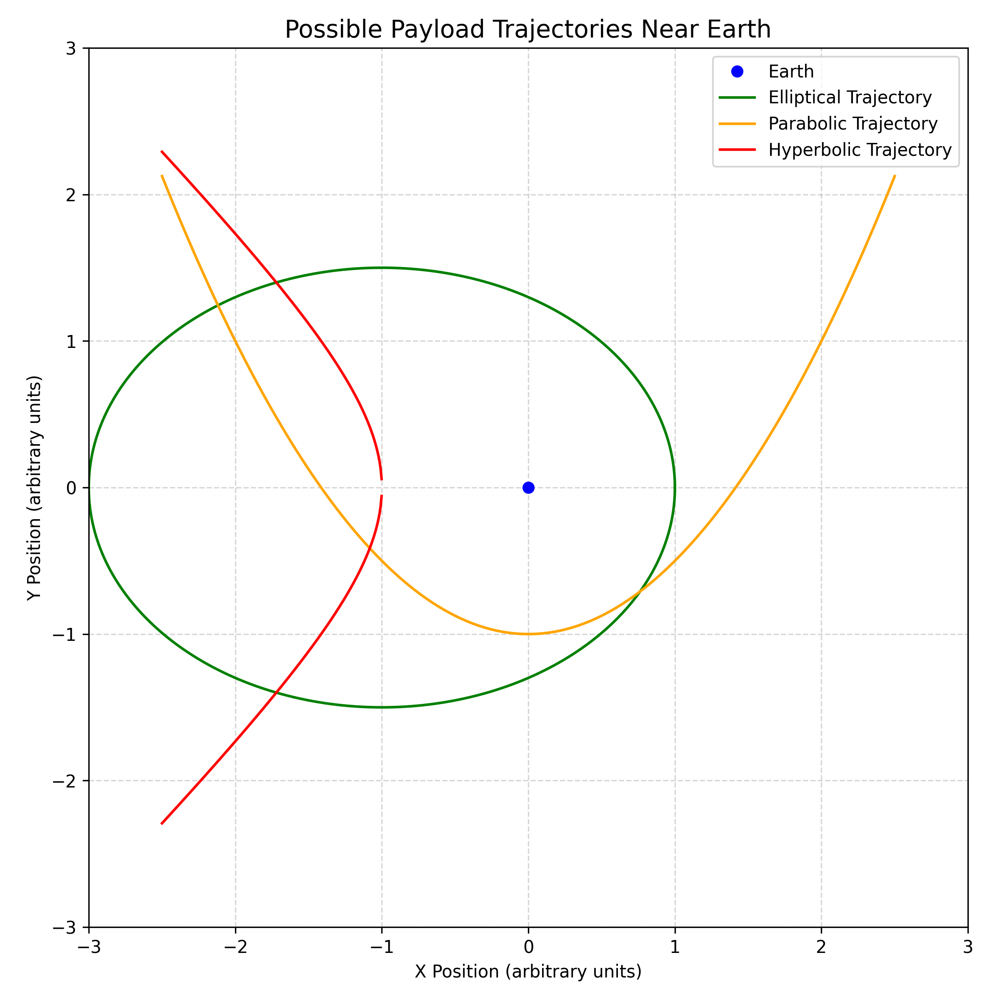

Trajectories of a Payload Released Near Earth
The trajectory of a payload released near Earth depends on its initial velocity relative to Earth's gravitational field. The path it follows can be classified into the following types:
1. Elliptical Trajectory (Sub-Escape Velocity)
- Condition: Initial speed is greater than 0 but less than escape velocity.
- Shape: Ellipse
- Meaning: The payload remains gravitationally bound to Earth and follows a closed orbit. If the speed is just right, it forms a circular orbit; otherwise, it's elliptical.
2. Parabolic Trajectory (At Escape Velocity)
- Condition: Initial speed is exactly equal to escape velocity.
- Shape: Parabola
- Meaning: The payload just escapes Earth’s gravity, moving infinitely far away with zero residual velocity.
3. Hyperbolic Trajectory (Above Escape Velocity)
- Condition: Initial speed is greater than escape velocity.
- Shape: Hyperbola
- Meaning: The payload escapes Earth’s gravity and continues moving indefinitely with excess velocity, often toward interplanetary or interstellar space.
Summary Table
| Trajectory Type | Initial Speed | Bound to Earth? | Path Shape |
|---|---|---|---|
| Elliptical | \( 0 < v < v\_{esc} \) | Yes | Ellipse |
| Parabolic | \( v = v\_{esc} \) | No (just escapes) | Parabola |
| Hyperbolic | \( v > v\_{esc} \) | No | Hyperbola |
These trajectory types are fundamental in space mission design, satellite deployment, and understanding celestial mechanics.

Numerical Analysis of Payload Trajectories
To analyze the path of a payload released near Earth, we can perform a numerical integration based on the laws of Newtonian gravity. The objective is to compute the payload’s trajectory over time, given its initial position, velocity, and altitude.
Key Concepts:
- Gravitational Force: The gravitational force exerted by Earth on the payload is given by:
$$ F = \frac{GMm}{r^2} $$
where:
- \( G \) is the gravitational constant,
- \( M \) is the mass of Earth,
- \( m \) is the mass of the payload,
-
\( r \) is the distance from the center of the Earth to the payload.
-
Equations of Motion: The trajectory can be computed by solving the second-order differential equations for position:
$$ \mathbf{F} = m \mathbf{a} = m \frac{d^2 \mathbf{r}}{dt^2} $$
where \( \mathbf{r} \) is the position vector and \( \mathbf{a} \) is the acceleration of the payload.
-
Initial Conditions: The initial conditions (position and velocity) are provided at the start, such as:
-
Initial position: \( (x_0, y_0) \) in meters.
- Initial velocity: \( (v*{x0}, v*{y0}) \) in meters per second.
-
Altitude: The starting altitude above Earth’s surface.
-
Numerical Integration: A simple Euler method or Runge-Kutta method can be used to numerically integrate the equations of motion and track the payload’s trajectory over time.
Steps to Perform the Numerical Analysis:
- Set Initial Conditions: Define the payload's initial position, velocity, and altitude.
- Compute Gravitational Force: For each time step, compute the gravitational force acting on the payload.
- Update Position and Velocity: Using numerical methods (Euler or higher-order methods), update the position and velocity of the payload for each time step based on the computed force.
-
Repeat: Continue the process for each time step to compute the path.
-
Visualize the Trajectory: After performing the integration, plot the trajectory of the payload in a 2D or 3D space.
Applications:
- Space Mission Planning: This analysis helps in determining the trajectory of spacecraft, including satellite launches, orbital paths, and escape trajectories.
- Predicting Re-Entry Paths: By considering initial velocities and altitudes, we can predict the re-entry path of a spacecraft or payload.
- Trajectory Optimization: Numerical analysis can be used to optimize the launch parameters for the most efficient path, minimizing fuel usage or maximizing the payload delivery.
Conclusion:
By performing a numerical analysis of the payload's motion using initial conditions, we can simulate various types of trajectories, including elliptical, parabolic, or hyperbolic paths. This analysis is fundamental for space exploration, satellite deployment, and spacecraft mission planning.